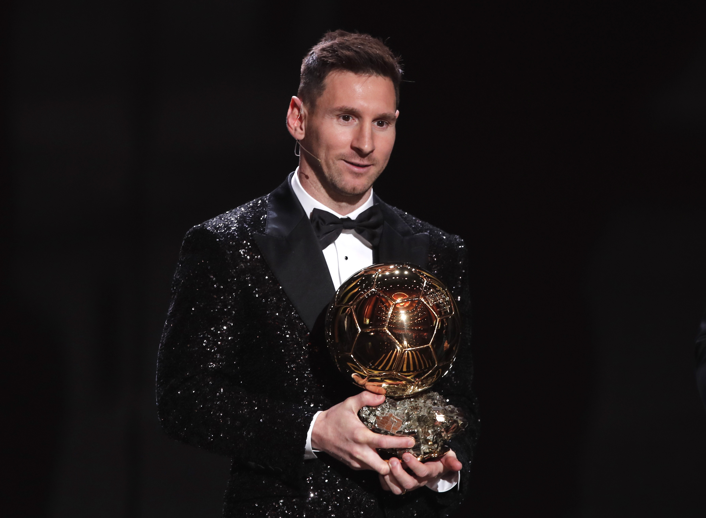

.jpg)
Informações pessoais:
Nome completo: Lionel Andrés Messi Cuccittini[1]
Data de nasc.: 24 de junho de 1987 (35 anos)
Local de nasc.: Rosário, Argentina
Nacionalidade: argentino espanhol italiano
Altura: 1,70 m[4]
Pé: canhoto
Leo, D10S, La Pulga Atómica, Messias, ET, Mágico
infomações profissionais
clube atual: Paris Saint-Germain
número: 30
Posição: atacante
Site oficial: messi.com

Messi em 2021 , recebendo sua 7º Bola de ouro
Clubes de juventude: 1995–2000 2000–2003 Newell's Old Boys BarcelonaClubes profissionais 2003–2004 2004–2005 2004–2021 2021– Barcelona C Barcelona B Barcelona Paris Saint-Germain 10
Seleção nacional 2004–2005 2007–2008 2005– Argentina Sub-20 Argentina Sub-23 Argentina 18
Partidas e gols totais pelos clubes, atualizadas até 13 de novembro de 2022. Partidas e gols pela seleção nacional estão atualizadas até 18 de dezembro de 2022.Lionel Andrés Messi Cuccittini (Rosário, 24 de junho de 1987) é um futebolista argentino que atua como atacante. Atualmente joga pelo Paris Saint-Germain e pela Seleção Argentina, onde, atuando como capitão, venceu a Copa do Mundo do Catar de 2022. Ele possui um recorde de sete premiações da Bolas de Ouro pela France Football e sete pela FIFA[9], um recorde de seis Chuteiras de Ouro e, em 2020, foi escalado no Dream Team da Bola de Ouro. Messi é frequentemente considerado o melhor jogador do mundo[10] e na opinião da grande maioria dos especialistas do esporte, sua qualidade técnica, jogadas, velocidade, habilidade na perna esquerda, trabalho de equipe e extraordinária vocação para o gol, o tornam um dos melhores futebolistas de todos os tempos,[11] com alguns ainda o colocando como o melhor jogador de sempre.[12] Passou quase toda a sua carreira profissional no Barcelona, onde é o maior goleador do clube e recordista de troféus, conquistando 35 troféus, incluindo dez títulos da La Liga (Campeonato Espanhol), quatro títulos da Liga dos Campeões da UEFA e sete Copas do Rei, entre outros. Um goleador prolífico e um craque criativo, Messi detém o recorde de mais gols pelo Campeonato Espanhol (474), mais gols marcados em uma única edição do Campeonato Espanhol e de uma liga europeia (50), mais hat-tricks na Liga dos Campeões (8), mais hat-tricks pelo Campeonato Espanhol (36), maior assistente do Campeonato Espanhol (205), mais assistências em uma única edição do Campeonato Espanhol e de uma liga europeia (21),[13] maior assistente da Copa América (17) e futebolista com mais gols em um único ano (91). Ele já marcou mais de 793 gols na carreira pelo clube e pela Seleção[nota 2] e é o jogador com mais gols oficiais por um único clube.
Nascido e criado em Rosário, na Argentina, Messi foi diagnosticado com uma deficiência do hormônio do crescimento quando criança, então com 13 anos, se mudou para a Espanha para ingressar no Barcelona, que concordou em pagar por seu tratamento médico. Pelo Barcelona, Messi fez sua estreia aos 17 anos em outubro de 2004. Estabeleceu-se como jogador integral do clube nos próximos três anos. Pela sua primeira grande temporada em 2008–09, ele ajudou o Barcelona a alcançar a primeira tríplice coroa do futebol espanhol; naquele ano, com 22 anos, Messi ganhou seu primeiro Ballon d'Or. Três temporadas de sucesso se seguiram, com Messi vencendo três Ballons d'Or consecutivos, incluindo um quinto sem precedentes.
Durante a temporada 2011–12, ele estabeleceu o recorde de mais gols marcados em uma única temporada pelo Campeonato Espanhol e mais gols marcados em uma única temporada europeia, enquanto se estabeleceu como o maior goleador de todos os tempos do Barcelona. Nas duas temporadas seguintes, Messi terminou em segundo lugar no Ballon d'Or, atrás de Cristiano Ronaldo, seu principal rival na carreira. Messi recuperou sua melhor forma durante a temporada 2014–15, tornando-se o maior goleador de todos os tempos do Campeonato Espanhol e levando o Barcelona a uma segunda tríplice coroa, após o qual ele recebeu o quinto Ballon d'Or em 2015. Messi se tornou capitão do Barcelona em 2018 e em 2021 recebeu seu sétimo Ballon d'Or, estabelecendo-se novamente como o maior vencedor do prêmio.Pela Seleção Argentina, Messi é o maior goleador de todos os tempos.[14] No nível Sub-20, ele venceu a Copa do Mundo FIFA Sub-20 de 2005, terminando o torneio com a Bola de Ouro e Chuteira de Ouro, e venceu também uma medalha de ouro olímpica nos Jogos Olímpicos de Verão de 2008. Seu estilo de jogo e seus dribles com o pé esquerdo gera comparações com seu compatriota Diego Maradona, que descreveu Messi como seu sucessor.[15] Após sua estreia na seleção principal em agosto de 2005, Messi tornou-se o mais jovem argentino a jogar e marcar um gol em uma Copa do Mundo FIFA (durante a edição de 2006) e chegou à final da Copa América de 2007, onde foi nomeado o melhor jovem jogador do torneio. Após ser nomeado capitão da seleção em agosto de 2011, ele levou a Argentina a três finais consecutivas: a Copa do Mundo FIFA de 2014, pela qual ganhou o prêmio de melhor jogador, e as Copas América de 2015 e 2016. Após se frustrar na final da Copa América de 2016 ele chegou a anunciar sua aposentadoria internacional,[16] mas reverteu sua decisão e qualificou seu país para a Copa do Mundo FIFA de 2018 e conseguiu o terceiro lugar na Copa América de 2019. Em 2021 conquistou seu primeiro título com a seleção principal ao vencer a Copa América de 2021, sendo eleito melhor jogador e artilheiro da competição. Em 2022, ele foi o capitão da seleção no título da Copa do Mundo FIFA de 2022, onde conquistou o prêmio de melhor jogador pela segunda vez, tornando-se, junto com Di María, o primeiro jogador a vencer Copa do Mundo principal, Copa do Mundo Sub-20 e Olimpíadas.[17]
Um dos atletas mais famosos do mundo, Messi é patrocinado pela empresa de roupas esportivas Adidas desde 2006 e desde então, se estabeleceu como o principal endossador.[18][19] De acordo com a France Football, Messi foi o jogador mais bem pago do mundo em cinco dos seis anos entre 2009 e 2014, e foi classificado como o atleta mais bem pago do mundo pela Forbes em 2019.[20] Ele estava entre as 100 pessoas mais influentes da Time no mundo em 2011 e 2012.[21] Em fevereiro de 2020, foi premiado com o prêmio Laureus de atleta masculino do ano, tornando-se o primeiro futebolista e também o primeiro atleta de esportes coletivos a ganhar o prêmio. Mais tarde naquele ano, Messi se tornou o segundo jogador de futebol (e segundo atleta de esporte coletivos) a ultrapassar US$ 1 bilhão em ganhos na carreira.[22]Infância e juventude
Filho de Jorge Messi e Celia Cuccittini,[23] desde criança demonstrava grande apego à bola, a ponto de negar-se a ir às compras com a família quando não lhe deixavam levar alguma bola.[23] Daria seus primeiros passos nas categorias menores do Abanderado Grandoli, um pequeno clube onde os outros membros da família já haviam jogado[23] - o endereço era a quinze quadras da casa dos Messi.[23] Entrou para a equipe após ser chamado pelo velho treinador para completar o time para uma partida. Tinha apenas quatro anos.[23] Posteriormente, seu pai, Jorge, seria seu treinador na categoria baby do Grandoli.[23] Lionel conseguia se sobressair com garotos de até sete anos.[23] No entanto, o garoto não duraria muito tempo na equipe: os pais o tiraram do clube após não lhes deixarem acompanhar um jogo do filho por falta de dinheiro para pagar os ingressos.[23] Quando completou sete anos, ingressou então nas divisões menores do clube do coração, o Newell's Old Boys.[23] Ainda assim, não se contentava em jogar na Lepra, jogando regularmente futebol na rua da casa ao lado dos irmãos mais velhos Matías e Rodrigo Messi e dos primos maternos Emanuel e Maxi Biancucchi[23] Lionel àquela altura conseguia jogar contra adversários de dezoito anos.[23] Porém, com onze anos detectou-se um problema hormonal que retardava o desenvolvimento ósseo de Messi e, consequentemente, seu crescimento.[23][24] Por um ano e meio, o tratamento de 900 dólares mensais,[23] que consistia em injeções alternadas em cada perna toda noite, foi custeado pela fundação onde seu pai trabalhava, até que a fonte secou.[23] Como o Newell's não quis custear a continuação do tratamento, o pai ofereceu o filho ao River Plate.[23][24] O interesse do clube da capital fez com que o Newell's voltasse atrás, mas de forma insuficiente, oferecendo duzentos pesos ao mês.[23]
Carreira
Barcelona
descoberta
O pai, então, resolveu apostar a sorte no exterior, também para poupar a família dos efeitos da crise econômica que ocorria na Argentina.[25] Uma prima da mãe de Jorge Messi vivia em Lérida, na Catalunha, e acolheu os Messi. Lionel passou a ser observado por um olheiro do Barcelona,[25]que o recomendou para testes no clube. Com treze anos e 1,40 de altura, conseguiu se sair bem contra garotos dois anos mais velhos. Recebeu o apoio de Josep María Minguella, o mesmo homem que trouxera Diego Maradona ao Barça, mas o presidente Joan Gaspart e o diretor desportivo Carles Rexach hesitavam em adquirir o jovem, uma vez que teria de custear as despesas não só do tratamento, mas também da mudança familiar.[25] O Barcelona só se convenceu após Rexach observar Messi, que estava no Infantil B, jogar pelo Infantil A contra uma equipe de jogadores bem mais velhos. Além de pagar pelo tratamento e pela mudança da família de Messi, o Barcelona também contrataria Jorge para ser informante.[25] “ Eu o contratei em 30 segundos! Ele me chamou muita atenção. Em meus 40 anos de futebol, jamais havia visto coisa semelhante. De cinco situações de gol, converteu quatro. E tem uma habilidade excepcional. Me lembrou o melhor Maradona. Seu primeiro contrato eu assinei, simbolicamente, em um guardanapo. Queria contratá-lo o quanto antes. Não podia deixá-lo escapar.[26] ” Ainda assim, o começo foi difícil. Um tratamento mais intensivo (e caro) precisou ser feito.[25]O Newell's negou-se a enviar a documentação necessária para o Barcelona, precisando-se de intervenção da FIFA em favor da permanência do garoto de 14 anos no clube catalão, uma vez que um jovem de sua idade necessitava estar ao lado do pai, oficialmente informante do Barcelona.[25]Com a família radicada na Espanha, cresceu 30 centímetros em trinta meses.[25] No novo país, seria "rebatizado" de Leonel Messi, daí surgindo o apelido Leo.[25]Na temporada juvenil de 2002–03, marcou 37 vezes em 30 partidas e passou a ser conhecido pelos jogadores da equipe principal, criando boa relação com os brasileiros Fábio Rochemback, Thiago Motta e, principalmente, Ronaldinho, que lhe apresentaria como "seu irmão mais novo",[25]e com seus compatriotas Juan Román Riquelme e Javier Saviola.[25]Ainda sem ter estreado entre os profissionais, já era disputado pelas seleções juniores de Argentina e Espanha.[25]Arsène Wenger, treinador do Arsenal, conhecido por garimpar jovens e desconhecidos jogadores, chegou a convidá-lo para jogar na equipe inglesa, que na mesma época tirara Cesc Fàbregas das mesmas categorias do Barcelona,[25]que imediatamente prorrogou o contrato de Messi até 2012.[25]
PRÊMIOS COLETIVOS: Futból Club Barcelona
- Campeonato Espanhol- 2004-05, 2005-06, 2008-09, 2009-10, 2010-11, 2012-13, 2014-15, 2015-16, 2017-18, 2018-19 : 10
- Supercopa da Espanha- 2005, 2006, 2009, 2010, 2011, 2013, 2016, 2018 : 8
- Copa do Rei 2008-09, 2011-12, 2014-15, 2015-16, 2016-17, 2017-18, 2020-21 : 7
- Liga dos Campeões- 2005-06, 2008-09, 2010-11, 2014-15 : 4
- Supercopa da Uefa- 2009, 2011, 2015 : 3 ]
- Mundial de Clubes- 2009, 2011, 2015 : 3
PRÉMIOS COLETIVOS:Pris Saint-Germain(PSG)
Como jogador do PSG, Messi conquistou até o momento uma Ligue 1 francesa e uma Supercopa da França
PRÊMIOS COLETIVOS:Argentina
- Mundial Sub-20-2005 : 1
- Jogos Olímpicos-2011 : 1
- Copa América-2021 : 1
- Finalissima-2022 : 1
- Copa do Mundo-2022 : 1
PRÊMIOS INDIVIDUAIS
O argentino é o recordista em Bolas de Ouro: em sete ocasiões foi escolhido como melhor do mundo pela France Football. Veja todos os prêmios individuais.
VÍDEOS LENDÁRIOS
Contato: +55 (27)99999-0286